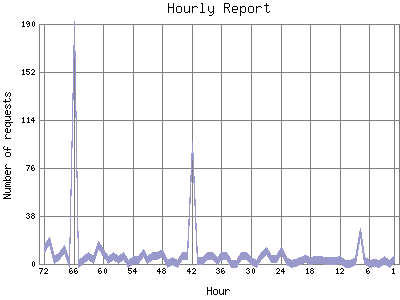

Analog 5.24
Analog 5.24 Report Magic for Analog 2.13
Report Magic for Analog 2.13The Hourly Report identifies the level of activity for each hour within the report timeframe. Remember that one page hit can result in several server requests as the images for each page are loaded.

| Hour | Number of requests | Percentage of the requests | |
|---|---|---|---|
| 1. | Nov 16, 2025 04:00 - 04:59 | 4 | 0% |
| 2. | Nov 16, 2025 03:00 - 03:59 | 0 | 0% |
| 3. | Nov 16, 2025 02:00 - 02:59 | 3 | 0% |
| 4. | Nov 16, 2025 01:00 - 01:59 | 0 | 0% |
| 5. | Nov 16, 2025 00:00 - 00:59 | 1 | 0% |
| 6. | Nov 15, 2025 23:00 - 23:59 | 0 | 0% |
| 7. | Nov 15, 2025 22:00 - 22:59 | 3 | 0% |
| 8. | Nov 15, 2025 21:00 - 21:59 | 25 | 0.1% |
| 9. | Nov 15, 2025 20:00 - 20:59 | 2 | 0% |
| 10. | Nov 15, 2025 19:00 - 19:59 | 0 | 0% |
| 11. | Nov 15, 2025 18:00 - 18:59 | 0 | 0% |
| 12. | Nov 15, 2025 17:00 - 17:59 | 3 | 0% |
| 13. | Nov 15, 2025 16:00 - 16:59 | 2 | 0% |
| 14. | Nov 15, 2025 15:00 - 15:59 | 2 | 0% |
| 15. | Nov 15, 2025 14:00 - 14:59 | 2 | 0% |
| 16. | Nov 15, 2025 13:00 - 13:59 | 3 | 0% |
| 17. | Nov 15, 2025 12:00 - 12:59 | 3 | 0% |
| 18. | Nov 15, 2025 11:00 - 11:59 | 2 | 0% |
| 19. | Nov 15, 2025 10:00 - 10:59 | 4 | 0% |
| 20. | Nov 15, 2025 09:00 - 09:59 | 2 | 0% |
| 21. | Nov 15, 2025 08:00 - 08:59 | 1 | 0% |
| 22. | Nov 15, 2025 07:00 - 07:59 | 0 | 0% |
| 23. | Nov 15, 2025 06:00 - 06:59 | 2 | 0% |
| 24. | Nov 15, 2025 05:00 - 05:59 | 10 | 0% |
| 25. | Nov 15, 2025 04:00 - 04:59 | 4 | 0% |
| 26. | Nov 15, 2025 03:00 - 03:59 | 4 | 0% |
| 27. | Nov 15, 2025 02:00 - 02:59 | 10 | 0% |
| 28. | Nov 15, 2025 01:00 - 01:59 | 6 | 0% |
| 29. | Nov 15, 2025 00:00 - 00:59 | 0 | 0% |
| 30. | Nov 14, 2025 23:00 - 23:59 | 2 | 0% |
| 31. | Nov 14, 2025 22:00 - 22:59 | 6 | 0% |
| 32. | Nov 14, 2025 21:00 - 21:59 | 6 | 0% |
| 33. | Nov 14, 2025 20:00 - 20:59 | 0 | 0% |
| 34. | Nov 14, 2025 19:00 - 19:59 | 0 | 0% |
| 35. | Nov 14, 2025 18:00 - 18:59 | 6 | 0% |
| 36. | Nov 14, 2025 17:00 - 17:59 | 6 | 0% |
| 37. | Nov 14, 2025 16:00 - 16:59 | 2 | 0% |
| 38. | Nov 14, 2025 15:00 - 15:59 | 6 | 0% |
| 39. | Nov 14, 2025 14:00 - 14:59 | 6 | 0% |
| 40. | Nov 14, 2025 13:00 - 13:59 | 2 | 0% |
| 41. | Nov 14, 2025 12:00 - 12:59 | 2 | 0% |
| 42. | Nov 14, 2025 11:00 - 11:59 | 94 | 0.3% |
| 43. | Nov 14, 2025 10:00 - 10:59 | 6 | 0% |
| 44. | Nov 14, 2025 09:00 - 09:59 | 6 | 0% |
| 45. | Nov 14, 2025 08:00 - 08:59 | 0 | 0% |
| 46. | Nov 14, 2025 07:00 - 07:59 | 2 | 0% |
| 47. | Nov 14, 2025 06:00 - 06:59 | 0 | 0% |
| 48. | Nov 14, 2025 05:00 - 05:59 | 9 | 0% |
| 49. | Nov 14, 2025 04:00 - 04:59 | 6 | 0% |
| 50. | Nov 14, 2025 03:00 - 03:59 | 6 | 0% |
| 51. | Nov 14, 2025 02:00 - 02:59 | 3 | 0% |
| 52. | Nov 14, 2025 01:00 - 01:59 | 9 | 0% |
| 53. | Nov 14, 2025 00:00 - 00:59 | 3 | 0% |
| 54. | Nov 13, 2025 23:00 - 23:59 | 3 | 0% |
| 55. | Nov 13, 2025 22:00 - 22:59 | 0 | 0% |
| 56. | Nov 13, 2025 21:00 - 21:59 | 6 | 0% |
| 57. | Nov 13, 2025 20:00 - 20:59 | 3 | 0% |
| 58. | Nov 13, 2025 19:00 - 19:59 | 6 | 0% |
| 59. | Nov 13, 2025 18:00 - 18:59 | 3 | 0% |
| 60. | Nov 13, 2025 17:00 - 17:59 | 9 | 0% |
| 61. | Nov 13, 2025 16:00 - 16:59 | 15 | 0% |
| 62. | Nov 13, 2025 15:00 - 15:59 | 3 | 0% |
| 63. | Nov 13, 2025 14:00 - 14:59 | 6 | 0% |
| 64. | Nov 13, 2025 13:00 - 13:59 | 3 | 0% |
| 65. | Nov 13, 2025 12:00 - 12:59 | 0 | 0% |
| 66. | Nov 13, 2025 11:00 - 11:59 | 189 | 0.8% |
| 67. | Nov 13, 2025 10:00 - 10:59 | 0 | 0% |
| 68. | Nov 13, 2025 09:00 - 09:59 | 12 | 0% |
| 69. | Nov 13, 2025 08:00 - 08:59 | 6 | 0% |
| 70. | Nov 13, 2025 07:00 - 07:59 | 3 | 0% |
| 71. | Nov 13, 2025 06:00 - 06:59 | 18 | 0% |
| 72. | Nov 13, 2025 05:00 - 05:59 | 12 | 0% |
Most active hour Mar 23, 2025 13:00 - 13:59 : 1,068 requests handled.
Hourly average: 10 requests handled.
This report was generated on November 17, 2025 01:09.
Report time frame April 8, 2024 11:04 to November 16, 2025 04:46.
| Web statistics report produced by: | |
| Analog 5.24 | Report Magic for Analog 2.13 |